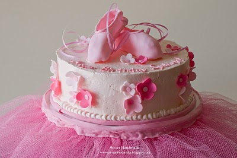

Hoera! Feest!

Dit seizoen is een heel feestelijk seizoen omdat we 10 jaar bestaan! zoals je ziet hebben we niet alleen een nieuwe website maar ook een nieuwe naam! We begonnen het feestelijke seizoen al met een klein feestje tijdens de Open Dag afgelopen zondag 2 september, maar er zullen nog meer feestelijkheden worden georganiseerd. We sluiten in juni af met een grote jubileum voorstelling en een feest! Houdt de website of facebook in de gaten voor alle nieuwtjes.

Tijdens deze opendag waren er verschillende workshops te volgen in de dansstudio en bij de muziekschool. Ook was er een kleine heropening van Babs Balletschool (voorheen Balletboetiek) hiermee is de nieuwe naam en het feestelijk seizoen ingeluid met champagne en taart!
Rooster 2018-2019
Rooster voor 2018-2019. Let op want er zijn enkele dagen en tijden veranderd.
Schrijf je hier in voor seizoen 2018-2019. inschrijfformulier